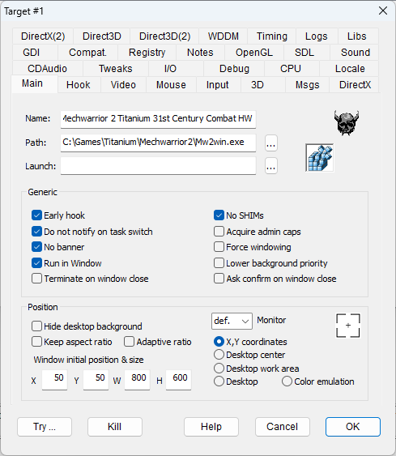
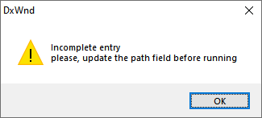
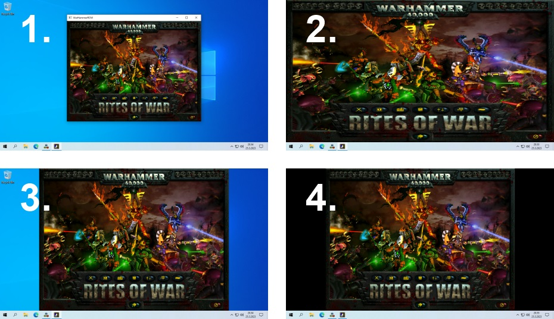

Check out the Beginner's Tutorial.
|
Name |
Allows you to choose a descriptive name for the entry. For example, if DxWnd is hooking two releases of a program, you can mention each entry's version number in the name. If you don't set a name, DxWnd sets the field by default with the task's filename or, if you selected the "Name from Folder" global option, with the task folder name. |
|
Path: |
The executable pathname of the task to be activated/hooked. The field should hold the full pathname of the task that DxWnd will search in the list of active processes and hook when it finds the correspondence. There are special cases depending on the first pathname character: If the first character of the pathname is an asterisk "*", this will work as a wildcard for anything that precedes the remaining part of the path. This can be used to hook a well-identified program, no matter where it is located on the system folders. But this feature should not be abused because DxWnd will hook any process with a matching path, and if this is generic enough, DxWnd could hook processes that were not meant to be hooked! In addition, the wildcard won't allow DxWnd to run the process directly from its interface. If the pathname first character is a question mark "?", this means that the initial part of the pathname is unspecified and DxWnd will ask you to complete the field before running the program. This allows distribution of export files that do not contain specific full pathnames and match only the originator's machine and automatically remind whoever imports them to complete the field before trying to use the imported configuration. NOTE: Only 32-bit executables are currently supported. |
|
Launch: |
BEWARE: This field has somehow changed its meaning and role since v2.05.77. The behavior of the field is quite different depending on the choice of the hook mode: In the case of "Window hook" (late injection mode), the launcher is the program that will execute the target program referenced in the "Path:" field. So, DxWnd will execute only the launcher, expecting a window notification when the target will be run. In all other cases (early injection modes), the target program must be run by DxWnd directly to ensure the hook functionality, so it is not possible to delegate the task activation to a launcher. When a program needs an early injection and is run by a launcher, it is necessary to use the shared injection modes. In these cases, the launcher field can hold a command string describing an activity to be started just before the activation of the target program. |
|
Early hook |
This is a fundamental flag since it selects how DxWnd will take control of the hooked program. DxWnd has several hook methods (see the "Hook" configuration tab) that work in two ways that are quite different: The "early hook" methods can take control of the target task from the beginning of the execution, but in order to do that, the target program must be run from the DxWnd interface, that is by double-clicking or selecting the "Run" command on the taget icon in the DxWnd panel. When you select the "Early hook" flag, by default, DxWnd sets the "Inject DLL" method that you can change with other methods selectable in the "Hook" configuration tab. The "non-early hook" or "late hook" method (currently there is only one, the "Window hook" method) instead takes advantage of the Windows hook that is triggered every time a new window is created, so the method works no matter how the target program is run. But the window creation could be preceded by other operations that are executed before DxWnd injection takes place into the target program, so this method doesn't always assure success. When you deselect the "Early hook" flag, DxWnd will use the "Window hook" method. |
|
|
No SHIMs |
CLEARSHIMS (former COPYNOSHIMS) |
This flag is useful in those cases where the program run under DxWnd control should not apply the shims configured by the Windows system. Since release v2.06.10 the shims cleaning is performed by setting the program PEB flags at runtime, so it is no longer necessary to make a copy of the target executable. In addition, the cleaning is valid only during the program execution from DxWnd and can be extended to the target son processes. |
|
Do not notify on task switch |
UNNOTIFY |
Inhibits the task switch notification message that may hurt some games not designed to handle it properly. For example, if the game window disappears when you click outside of it, try enabling this flag. |
|
Acquire admin caps |
NEEDADMINCAPS |
Some applications require DxWnd to be run with administrator privileges. If you set this flag and run DxWnd without administrator privileges, running a game from the DxWnd interface will show a dialog box prompting you to elevate the permission level. When you confirm this, DxWnd will automatically terminate and restart itself. If you don't see the window anymore, look beneath other windows, as it may lose its Z-order when it restarts. |
|
No banner |
NOBANNER |
Well, DxWnd celebrates itself a little by showing a very short splash screen at the beginning. If you're not happy with this, checking this flag will disable the show. The banner is enabled by default because it helps finding out whether and when the hook takes place and detects the beginning of a fullscreen condition, so it helps in finding the correct DxWnd configuration for a new game. The banner includes a short animation with light effects, but if you prefer a shorter and simpler animation, you only have to delete the "dxwanim.bmp" file from this program's folder. In case the configuration includes some debug flag, then the banner changes its picture to remind you of it. See below the normal banner (left) and the banner when debug flags are set (right). |
|
Force windowing |
FORCEWINDOWING |
Forces applications to be considered to be always in fullscreen mode, helping DxWnd to set them in windowed mode when the fullscreen condition is not automatically detected. It can take effect only when the WINDOWIZE flag is set. This flag was formerly named FULLSCREENONLY and was renamed for the sake of clarity. |
|
Run in Window |
WINDOWIZE |
Checked by default, tells DxWnd to try to run the program in windowed mode, as that is the essential reason why DxWnd exists. If not checked, DxWnd still performs all other functions not related to the screen size, such as time stretching, compatibility options, and so forth. |
|
Lower background priority |
BACKGROUNDPRIORITY |
A simple change of priority class when the game gets/loses focus. This is meaningful only for old games that were not developed to suspend themselves before going idle. |
|
Terminate on window close |
TERMINATEONCLOSE |
Immediately terminates the application when you close the window. |
|
Ask confirmation on window close |
CONFIRMONCLOSE |
Asks you for confirmation when you close the window. |
|
Use short path |
USESHORTPATH |
Legacy flag for use only in Windows XP to support Windows 9x compatibility layer. This option is visible and available on Windows XP platform only, since it is useless on more recent systems. |
Since v2.06.13 a new position mode was added, the "Color emulation" mode. This mode doesn't try to change the window settings about size, position and style. Games run with the original characteristics, but on certain rendering engines DxWnd converts the color mode to some supported value, typically converting GDI and DirectDraw 8 or 16 bits vide modes to 32 bits.
Example: 1. Desktop center, 2. Desktop work area, 3. Desktop work area + Keep aspect ratio, 4. Desktop work area + Keep aspect ratio + Hide desktop background

The following flags have an effect only when the "Run in Window" option (above) is selected.
|
Hide desktop background |
HIDEDESKTOP |
Starts the window-ized program with four black borderless windows that surround it entirely, eliminating distracting background windows and providing a more focused gaming experience. The whole idea was borrowed from "Mr. Hide." NOTE: In some cases, the black window used as a background panel can interfere with the target program. In this case, it is possible to run an external and independent tool to perform the same task by using the DxWnd menu command: Tools > Run "blacker". |
|
Keep aspect ratio |
KEEPASPECTRATIO |
When the window is resized, this flag avoids the change of the initial aspect ratio. This flag can also be used to preserve custom aspect ratios, for instance, the ones used for arcade games. |
|
Adaptive ratio |
ADAPTIVERATIO |
The rendered area dynamically assumes the same aspect ratio as the virtual desktop resolution. This is useful when DxWnd is configured for fake fullscreen modes and a program uses different resolutions that don't have all the same aspect ratio (e.g., "Cossacks II: Napoleonic Wars"). |
|
Window initial position & size |
Coordinates for the upper left window corner (X, Y) and the window width (W) and height (H). All values are used for the window client area rather than the outside border. These values are used depending on the position type selector (see in the bottom right in this tab):
|
|
|
Monitor |
For almost all window position modes (except the "X,Y coordinates" mode), multi-screen configurations require you to specify which monitor the configuration refers to. For instance, if you select "Desktop center", you probably want it centered on a specific monitor rather than the entire extended desktop. The drop-down selector has a "def." ("default") option, referring to the primary monitor, and a number for each specific monitor. |
|
|
Coordinate picker |
This icon activates a mechanism to pick the new program's placement coordinates (see "Window initial position & size" above) using an existing window on the desktop. Click and drag the icon to the desired window to automatically fill in the "Window initial position & size" fields with their window coordinates. Release the mouse button while over the title bar or an empty area in the desired window, as releasing the mouse button over a widget (like a text field, button, or other object) will select coordinates for that widget rather than the entire window. |
|
|
Position |
A selection of 5 possible cases:
Note that the first two modes are considered as windowed modes, while the last two modes are considered as fake-fullscreen modes. The behavior of the "Keep aspect ratio" flag changes along with this classification. |